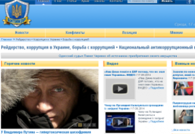

Информационная гигиена: кто распространяет слухи и фейки
Обзор источников, информацию из которых стоит воспринимать скептически, подготовленный Mediasapiens.ua.
Этот обзор составлен на основании тех ресурсов, с которыми приходилось сталкиваться.Он является неполным и требует расширения и дополнения.
Antikor
В первую очередь в поле зрения попадают издания, которые играют на эмоциях читателей и заманивают аудиторию громкими и безосновательными заголовками.Одни лишь заголовки, очевидно, должны удовлетворить аудиторию.Причем они подготовлены на основе слухов и фейков: «Южмаш дает России пять дней для вывода войск, иначе она останется без ядерного щита», «Гелетей будет расстрелян?», «Скоро орде придется доплачивать, чтоб брали ее газ.Президент Литвы закрутила вентиль «Газпрома«», «Российское танковое подразделение перешло на сторону Украины — батальон «Киевщина«», «Украинская армия сбила российский военный самолет».Другие заголовки скорее сеют панику: «В ближайшие 48 часов Путин может ввести войска в Украину».Если уважаемое информационное издание и берется сообщать о том, что поизойдет в будущем, то делает это в форме не пророчества, а анализа — при каких условиях и обстоятельствах это может случиться.
Об информационной ценности таких новостей сами за себя говорят заголовки.Кроме этого, не стоит ждать достоверной информации от источника, который публикует такие заказные тексты: «Юлия Притула и Елена Мостовая развели Виктора Пинчука на 200 тысяч».
Elise
Некоторые «сенсационные» новости вроде «Начало?Китай стягивает войска на границу с Россией» Antikor одалживает у еще одного сайта безосновательных сенсаций Elise.com.ua.Такими же сенсационными псевдоновостями сайт без особого труда получил себе 30 тысяч посетителей.
Некоторые из последних примеров: «Сенсационные материалы!Кто убил Януковича, организовал Майдан и почему России конец», «Началось!На Путина возбудили уголовное дело по массовым убийствам на Майдане», «Лед тронулся.Путина хотят убить», «ВАЖНО: террористы сообщают, что Ярош получил смертельное ранение в шею!»CapsLock, очевидно, должен компенсировать то, что информация взята с откровенно лживого издания Ukraina.ru, созданного под руководством Дмитрия Киселева.Иногда сайт предлагает читателям далекие от реальности пророчества: «В ближайшие дни Ефремов будет в клетке или ликвидирован — источник».Пророчество не сбылось.Ефремов до сих пор не «в клетке» и никоим образом не «ликвидирован».Но суть новости, которая в заголовке никак не представлена, заключается в том, что против Ефремова планируют открыть уголовное дело, которое в конце концов открыли.Только не «в ближайшие дни», а спустя почти два месяца после публикации новости.«Это конец русской весны.Агенты ФСБ готовят героическую смерть Стрелкова и конец войны на Донбассе», — такое пророчество от Elise в конце июля, очевидно, должно было внушать читателям надежду на лучшее.Однако опыт последующих недель — Иловайский котел и российское вторжение в районе Новоазовска — показал, что читателю нужны не иллюзии псевдоаналитиков, а понимание реального положения дел.
Иногда издание публикует сенсационные фейки — «В Донецк завозят российские танки (ФОТО, ВИДЕО)».Опубликованное 16 марта 2014 сообщение должно было наводить ужас на общество, которое тогда было значительно хуже готово к войне, чем сегодня.Под Горловкой тогда действительно проехал военный эшелон.Правда, танки были украинские.
«СБУ: Ляшко предатель!Он сливал позиции украинских военных на востоке своему покровителю (+ ВИДЕО, ФОТО)», — после предыдущих заголовков трудно поверить, что это не слив, использованный в политических играх за электорат.
Freejournal
Пользователи также ошибочно могут принять за средство массовой информации новостные агрегаторы или блог-платформы вроде Freejournal.biz.Это ресурс, на котором каждый желающий может создать аккаунт и публиковать собственные новости.Некоторые сообщения довольно популярны среди читателей, однако обычно это только слухи без ссылки на источник и с вымышленными деталями.
Например, 6 сентября издание опубликовало фото братской могилы русских солдат с надписью «Погибли за Путинскую ложь».Фото сопровождает подпись: «»Зачем нам это» — задумываются многие солдаты и офицеры, по сути ставшие оккупантами».Freejournal.biz не сообщает, каким образом им удалось узнать, о чем говорили (то бишь, «задумались») российские военные рядом с этой табличкой.Украинские СМИ, которые распространили фото со ссылкой на СНБО, никаких цитат российских офицеров не приводят.
В другом сообщении анонимный автор Freejournal.biz берет за основу твит российского общественного активиста Андрея Марцева и добавляет к нему собственный сценарий развития.Марцев со ссылкой на жителей городка Энгельс пишет о массовом подъеме в воздух авиации: «Жители Энгельса сообщают, что сейчас с аэродрома массово поднимаются самолеты и летят в сторону Запада!Неужели началось?#НетВойне #Война».Чрезвычайно информативный твит о передвижении российских войск «в направлении заката» с легкой руки автора Freejournal.biz стал маневром российской военной авиации «с авиабаз в Астраханской и Нижненовгородской областях в район Ростова».Более того, в твите Андрея Марцева автору удалось найти слова местных жителей, которые уверены, что таких масштабных маневров не было с момента грузинской войны 2008 года.Информация о передвижении российских войск важна.Однако важна именно информация, а не слухи.И важна эта информация в первую очередь для украинских вооруженных сил, которые на нее должны соответствующим образом реагировать.Распространение таких слухов в обществе — не более, чем паникерство.И это паникерство с сайта Freejournal.biz собрало 836 репост в соцсетях.Кроме этого, его перепечатал ряд других интернет-ресурсов.
Uainfo
Слухи и недостоверные сообщения также были замечены на популярном ресурсе Uainfo.org, который фактически делает обзор постов из блогосферы, правда, несмотря на их достоверность.Недавно сайт распространил слух о том, что Китай стягивает войска к границе с Россией.По сообщению, 12-15 тысяч живой силы и артиллерии якобы разбили лагерь в пограничном китайском городе Маятун неподалеку России.Этот слух опубликовал уже упомянутый Elise.com.ua.Такая привлекательная «новость» кружилась украинской блогосферой и даже достигла некоторых, правда, маргинальных американских и польских СМИ.Однако эта информация не имеет ничего общего с фактами.На самом деле на российско—китайской границе происходили совместные антитеррористические учения двух стран с воспроизведением сценария, в котором террористы осуществляют теракт в Китае и пытаются через Россию сбежать в Среднюю Азию.Elise.com.ua в этой новости о якобы стягивании китайских войск к границе даже использовал фотографию идентичных учений предыдущего года.
Другой популярный фейк, который Uainfo распространил даже несколько раз, касается статуса союзника США для Украины.Блогосферу и социальные сети переполняло обнадеживающими сообщениями о том, что теперь США нас точно защитят.Согласно сообщению, в случае внешней агрессии такой статус позволяет США ввести свои войска для защиты союзника.Такой статус Украины якобы предоставил американский Сенат.На самом деле подобного решения верхняя палата американского парламента не принимала.Зато в начале мая этого года сенатор Боб Коркер зарегистрировал законопроект под названием «Акт о предупреждении российской агрессии», в котором и прозвучало предложение придать статус основного союзника вне НАТО для Украины, Молдовы и Грузии.За последние четыре месяца никакого продвижения в рассмотрении этого законопроекта не произошло.
На материалы сайта под названием «Независимое украинское информационное народное агентство» сокращенно — НУИНА, обычно не обратили бы внимания, однако он тоже распространяет вредные для информационного пространства сообщения.Минимум не внушают доверия: «Московских бомжей начинают переселять на Донбасс», как, впрочем, и сами тексты: «Друзья, есть две новости.Очень плохая и очень хорошая.Начну с очень плохой.Мы на пороге 3-й Мировой Войны … Вторая новость очень хорошая.Мы можем остановить это безумие.Прямо сейчас».Эти «очень плохая и очень хорошая новости» собрали более 19 тысяч распространений в соцсетях, а «сенсация» о бездомных — тысячу распространений.Никакой ценности ни первый, ни второй текст в себе не содержат.
Также не стоило бы обращать внимание на «портал мировоззренческих новостей «Народный обозреватель«», который перепечатывает сомнительные новости типа: «Двойник сына Порошенко воюет на фронте, а сам Алексей отдыхает у деда и ходит на концерты».Сенсационный заголовок, который так понравился читателям (1800 репост в соцсетях), имеет мало общего с реальностью.Автор материала утверждает, что ей удалось пообщаться с Алексеем Порошенко, однако не приводит никаких доказательств.Сложно доверять такому сообщению и еще и с очевидной бессмыслицей в заголовке.Зато жена Президента подтвердила, что ее сын находится в зоне АТО.
Сепаратистские издания
При выборе источников стоит остерегаться информации из сепаратистских изданий, которые фактически были созданы, чтобы распространять дезинформацию и оправдывать действия террористов.Подробно структуру сепаратистских СМИ на Донбассе описал Роман Шутов.Здесь упомянем лишь некоторые из них.
Например, издание «Русская весна» (rusvesna.su) достоверную информацию публикует лишь изредка, да и то с собственными интерпретациями.Зато там можно встретить такие заголовки: «Порошенко натравили Отп правозащитников на Нацгвардию и частные армии», «В район Славянска оккупационные войска завозят цистерны с ядовитыми веществами, готовятся провокации — штаб армии ДНР».
Сайт также часто публикует фейковые новости.Например, 10 августа на «Русской весне» появилась новость о том, что венгерские и закарпатские русины объединят усилия для борьбы за федерализацию Украины.Об этом якобы договорились на конгрессе в Будапеште.Однако местное издание «Голос Карпат» пообщалось с руководителями трех закарпатских русинских организаций, они опровергли эту информацию и назвали участников «конгресса» самозванцами.Значительную огласку получило опубликованное на сайте фото, на котором мужчина в военной форме держит в зубах человеческую руку.Пророссийское издание заявило читателям, что это украинский солдат якобы поедает руку россиянина.На самом деле фото было сделано на съемках скандально известного фильма «Мы из будущего».
В сети часто можно встретить видеоматериалы агентства Anna News.Название этого ресурса расшифровывается как Abkhazian Network News Agency.Агентство было создано 2011 года в непризнанной международным сообществом и связанной с Кремлем республике Абхазия.Издание активно освещало гражданскую войну в Сирии с точки зрения войск режима Башара Асада, а сегодня откровенно декларирует поддержку боевиков на Донбассе.В докладе Верховного комиссара ООН по правам человека по 15 июня 2014 это агентство обозначено как использующее язык ненависти в своей работе.
Ukraina.ru — ресурс, созданный под руководством Дмитрия Киселева, который является источником ряда фейков и манипуляций.В частности, 30 июня издание опубликовало смонтированное фото документа, согласно которому секретарь СНБО (в издании его называют главой СБУ) Андрей Парубий якобы готовил провокацию против России.Для подделки распространенного документа были использованы подпись Парубия из другого документа за январь 2014 года.Со ссылкой на Ukraina.ru фейковое сообщение было озвучено в эфире канала «Россия 24».Помимо этого издание активно использует манипулятивные заголовки в своих новостях и покрывает действия боевиков и российских войск на Донбассе.Редактор издания — Елена Березовская — является также автором украинофобского фильма, в котором зрителю навязывается мысль о том, что Украины как государства не существует и она является лишь проектом Запада.За такую деятельность имя дамы Березовской занесено на Доску позора лживых журналистов.
Другие сепаратистские издания, публикующие дезинформацию и демонстрирующие поддержку боевиков: novorus.info, novorosinform.org, dnr—news.com, voenkor.info.
В этом контексте странным выглядит также практика украинских СМИ сначала транслировать российскую пропаганду, чтобы потом ее опровергнуть.Одним из последних примеров была информация о вывозе в Россию оборудования из Луганского предприятия.27 августа украинские издания со ссылкой на Vesti.ru опубликовали информацию о том, что Луганский машиностроительный завод переносит свое производство в Чувашию.Сообщение появилось через несколько дней после заявления СНБО о том, что Россия вывозит оборудование с украинских заводов грузовиками так называемого гуманитарного конвоя.Казалось бы, сам факт, что источником информации об Украине является российское СМИ, требует двойной проверки перед публикацией.Как выяснило агентство «Укринформ», в Россию переехал директор и работники частной компании «Лугмаш—43».Это предприятие не имеет никакого отношения к Луганскому машиностроительному заводу, который со всем оборудованием находится на месте.Так что тут СМИ больше руководствовались соображениями обеспечить оперативность, чем достоверность.Таким образом большинство украинских интернет—изданий добровольно стали ретрансляторами российской пропаганды.Более того, опровержение этой информации впоследствии опубликовали лишь единицы.
В определенном смысле первенство в транслировании сообщения действительно важнее его достоверности.Сложно убедить жителей Донбасса в том, что на Славянск не бросали фосфорных бомб и что не было никакого распятия трехлетнего мальчика, хотя потом эти сообщения неоднократно опровергали разные источники.
Петиции
Хотя и не информационную, но тоже не мобилизационную роль выполняют петиции вроде «Признать Россию спонсором терроризма», «Верховная Рада Украины: Мы ПРИЗЫВАЕМ Вас принять новый гимн Украины», «Депутатам Верховной Рады Украины — принять Закон о Знамени с расположением цветов: желтый сверху, голубой снизу», «Всем неравнодушным!Сбор подписей в поддержку всеукраинского референдума» (адресат: Всем, кому не безразлична Украина).Едва ли не каждому из нас на ящики приходят такие и подобные петиции.Несмотря на иногда дельную идею, эффектом от них может быть разве что раздражение.Одних они раздражают, потому что оторваны от реальности и отвлекают от более существенной информации, а других — потому что подписанное ими требование провести референдум до сих пор не выполнено.Для такой деятельности уже придумали термин slacktivism — это компенсация собственной пассивности с помощью петиций и гневных комментариев и другой неэффективной деятельности в сети.
Не стоит засорять информационное пространство своих близких и знакомых.Распространение таких петиций только съедает мобилизационный потенциал интернет-пользователей, а эффективность от них практически нулевая.Например, в начале Майдана чрезвычайно популярной была петиция с требованием к США применить санкции против Виктора Януковича.Обращение за молниеносные трое суток до 30 ноября 2013 собрало необходимые 100 тысяч голосов.Сегодня на сайте Белого дома даже гордо указано, что требование петиции было выполнено и санкции введены.Только вот ввели их через более трех месяцев — 17 марта 2014.На тот день произошел ряд героических и трагических событий, которые изменили страну больше, чем на это способна петиция.
Если же вы все же хотите подписать петицию и убедить своих друзей также подписать ее, то сначала стоит самому / самой убедиться в адекватности требований, изложенных в обращении, кто является его инициатором и действительно ли оно дойдет до адресата после сбора необходимого количества подписей.Вам известно, сколько подписанных и распространенных вами обращений с сайта Avaaz попали к тем, кому они были адресованы?
Война поляризует восприятие мира — все делится на белое и черное.В нашем понимании средств массовой информации могло выработаться похожее разделение на украинские (добрые) и российские (плохие).Это упрощение является опасным, поскольку интернет—ресурсы делятся на достоверные и недостоверные.И если не осознать этого предела, то есть риск читать только плохие источники информации независимо от страны.
Источник: Mediasapiens.ua.
Posted On: 2014-09-18T21:00:00

Content Date: 2014-09-18
Download Date: 2021-07-16
Document ID: L0C04FGN4